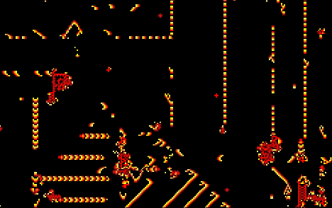

ABOUT
私たちは、神山まるごと高専のライフゲーム研究部です。
ジョン・コンウェイが考案したセル・オートマトンの一種である
「ライフゲーム」を研究し、その応用や新しい展開を探求しています。
プログラミングとアルゴリズムの力を借りて、生命の神秘や複雑系の
美しさを探求することが私たちの目標です。
ACTIBITIES
私たちは、多様なプログラミング言語を駆使してライフゲームを実装し、
その進化を美しく視覚化する手法を探求しています。
同時に、独自のライフゲームルールを考案し、
興味深いパターンを生み出す条件の研究に励んでいます。
LIFEGAMEの実装
私たちは、多様なプログラミング言語を駆使してライフゲームを実装し、
その進化を美しく視覚化する手法を探求しています。
同時に、独自のライフゲームルールを考案し、
興味深いパターンを生み出す条件の研究に励んでいます。
独自のプログラム
通常のLIFEGAMEだけでなく、
私たち独自のプログラムを開発。
より美しい機械生命を作りあげています。
新しい分野の探索

スターウォーズなどのLIFEGAMEの新しいパターンや
構造物の作成、セル・オートマトンの域を超えた
新たな機械生命の作成を目指して
日々研究を続けています。